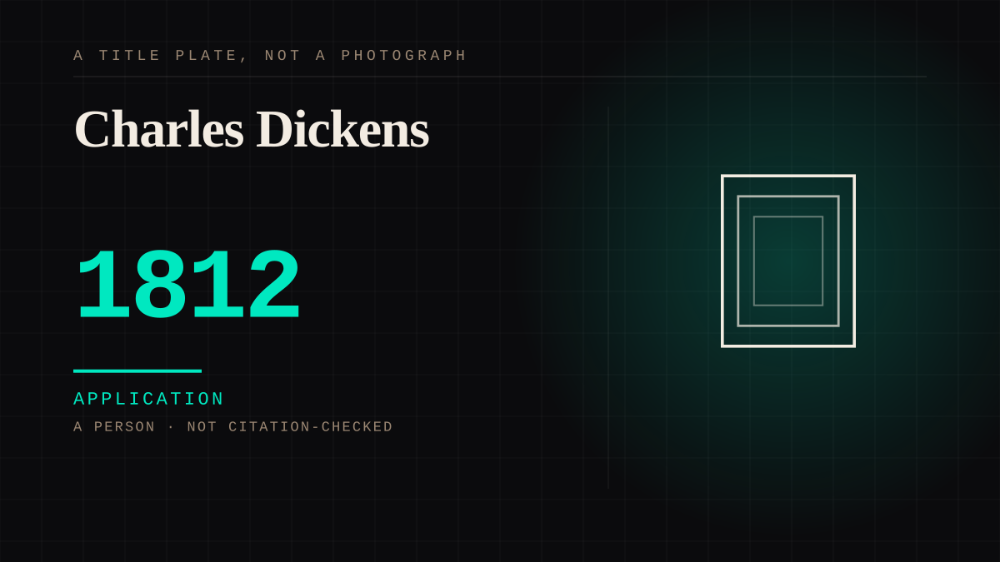

A person · 1812–1870 · Victorian
Charles Dickens
Serialised fiction to a mass audience, weekly, to people who could not afford a book but could not afford not to read it.

Built the first audience for fiction that was reliably weekly, enormous, and not present in the room.
Application. One-sided attachment put to work on purpose. Creator economies, community, fandom as infrastructure, and the things that genuinely help people. Not automatically good - a tool with an obvious use is a tool that will also get a bad one.
Where it sits
1800 1800-1899 · 1812 1899
Provenance · 1 source record(s)
- needs-sourceNovelist and serial publisher; dates standard.Standard biographical record.
CHARACTER The written character
Connected · 2 out, 3 in
Miss Havishamwrote · 1861 · A personThe audienceof the same time as · 1600 · A mechanism or tacticMiss Havishamdepicts · 1861 · A personThe archivistof the same time as · A personVote for the murderercites · 1985 · A work
It sits in
The full timeline → · The database → · See it in the atlas →